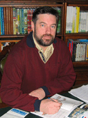

Андрей Анатольевич Плешаков
— известный автор учебников, рабочих тетрадей, тестов и других пособий по окружающему миру: в 90-х годах младшие школьники учились по его «Природоведению», а теперь — по учебникам «Мир вокруг нас».
Плешаков написал удивительные книги «Зеленые страницы» — о живой природе и «Великан на поляне, или Первые уроки экологической этики» — о том, как стать добрым Великаном, другом всему живому. Андрей Анатольевич разработал первый в России атлас-определитель для начальной школы «От земли до неба» и курсы для дополнительного образования «Экология для младших школьников» и «Планета загадок».
В настоящее время Андрей Анатольевич Плешаков вместе с Мариной Юрьевной Новицкой работает над новым поколением учебников по окружающему миру для учебно-методического комплекта «Перспектива» серии «Академический школьный учебник», которые выходят в издательстве «Просвещение». Также руководит УМК «Школа России.